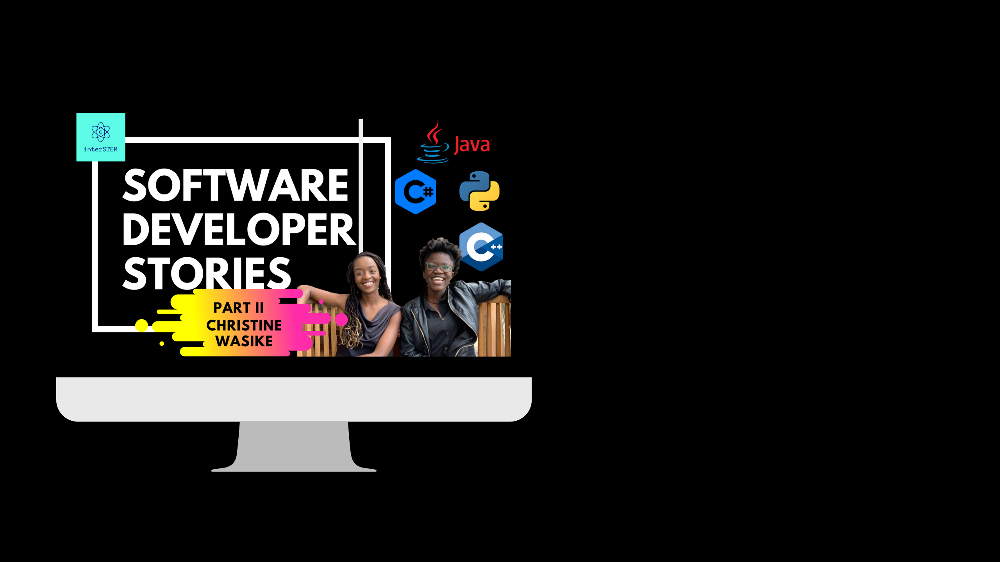
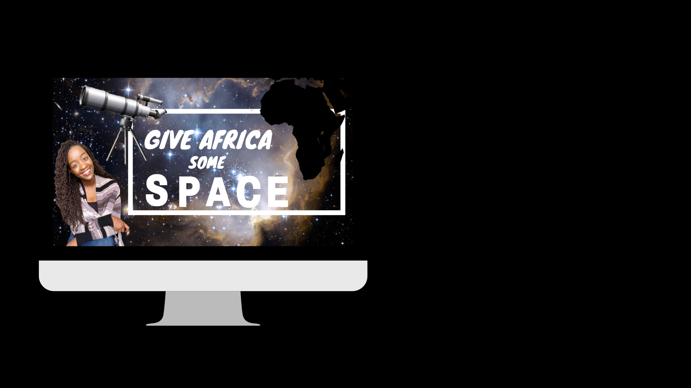
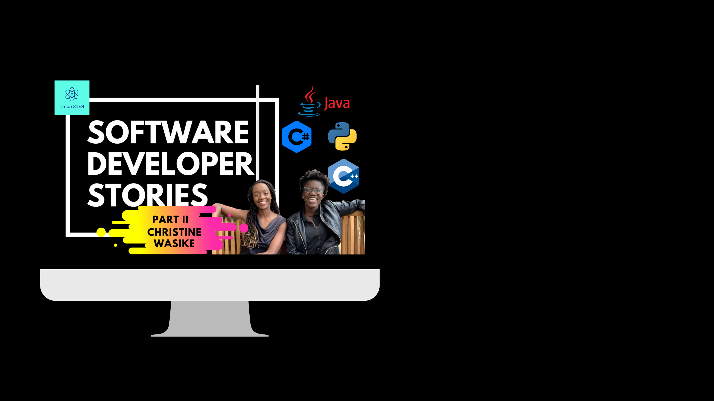
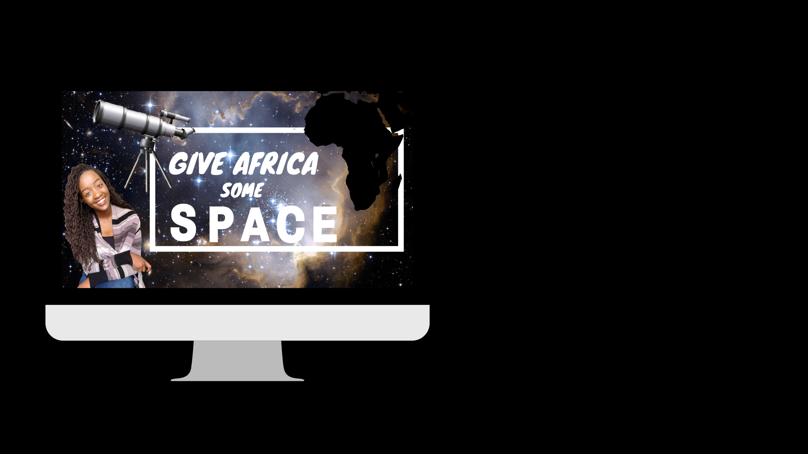

Hi, I’m Tabitha!
I’m a young Kenyan visionary in tech.
I’m an undergraduate sophomore studying Computer Science at Boston University. I’m passionate about understanding and sharing the connection between tech and humans; we are tech and tech is us


Python: Spring 2019
In this introduction to Python class we focused on writing Python scripts for data analysis. The assignments mimicked real-world DNA sequencing data science projects.

Java: Fall 2019
This class focused on java programming fundamentals and data structures. The assignments involved programming algorithms for the key data structures.
This 5 week bootcamp involved designing websites for different projects.

I decided to learn machine learning because I wanted to understand how computers think and how they help us think more clearly. I got this idea after taking on a writing class in Fall 2019 where I got to choose my own topic, so I did! I choose ‘Unfairness and Bias in Machine Learning’. I began to read more scholarly articles written by machine learning experts and took up an online course. This section of my portfolio is dedicated to my learning journey.

Hands Movement was my way of contributing to the vision of a more educated and stronger Kenya and Africa as a whole. The movement’s goal is to improve the education experience for children in marginalized areas in Kenya.
interSTEM is a YouTube channel through which I share various perspectives from students, professors, and professionals in STEM. It started when I transitioned from a major in the social sciences to one in STEM. I knew I wanted to be a STEM major because of my curious and inquisitive personality. The only challenge was that I had no idea whether I wanted to do Science, Technology, Engineering, or Math. I then decided to interview people in these various fields and gain their insight in order to make a personal decision.


 




The turning point came when I spoke to a health informatics expert who pointed out the importance of Math, Life Sciences, and Computer Science in solving some of the more nuanced and modern challenges in the healthcare sector. I decided then that I would be a Mathematician! After a semester of Calculus II and an ‘Intro to Python’ class, I came to the conclusion that although Math is fundamental, Computer Science allows me to implement these mathematical concepts more practically. The code allowed me to bring Math to life and problem-solve in creative ways.


GITHUB